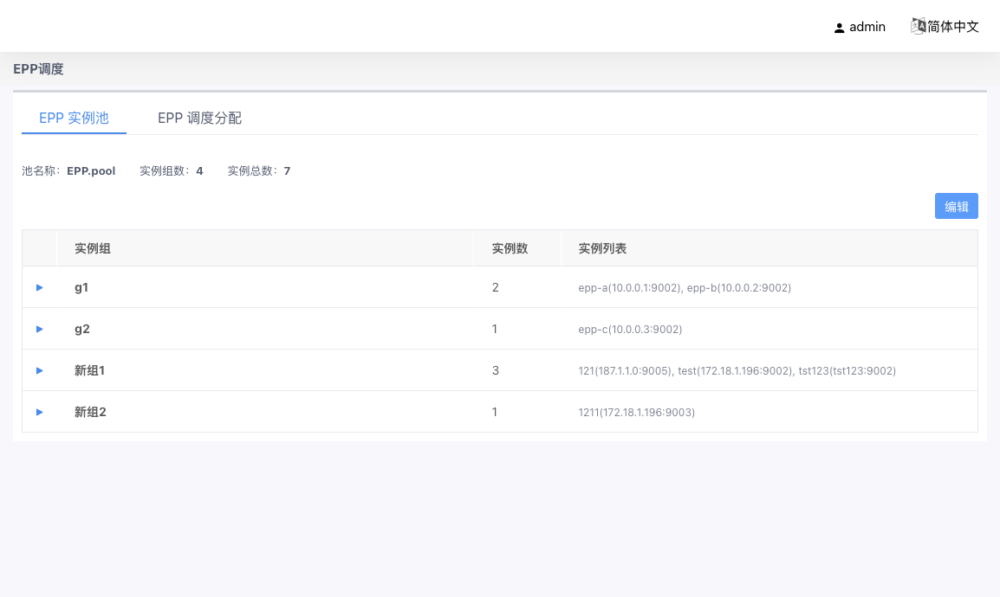
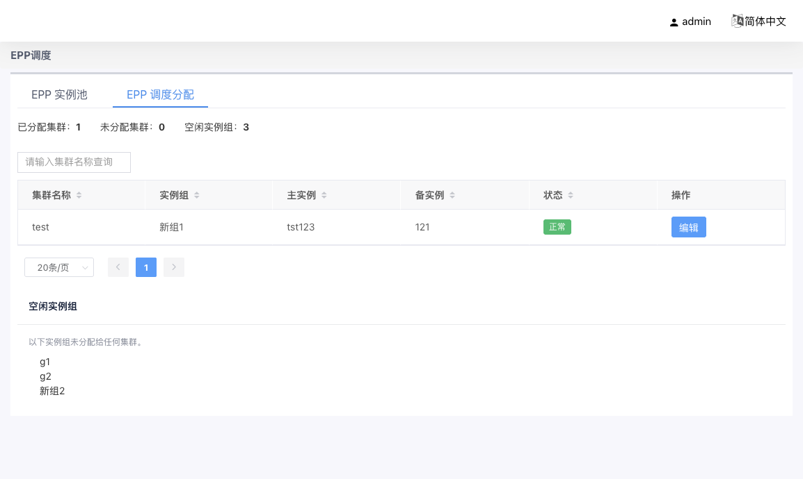

05 资源管理：EPP 调度
EPP（Endpoint Picker）是独立于 BFE 的后端调度器。集群将「负载均衡模式」设为 EPP 后，后端实例的选择不再由 BFE 本地加权轮询完成，而是交给 EPP 调度器接管（模式与调度参数在集群向导步骤 4 的「均衡模式配置」卡片中设置，见 4.6 节）。
入口：资源管理 → EPP调度。页面分为两个页签：
- EPP 实例池：登记 EPP 调度器自身的部署实例（按组组织，组内主备）；
- EPP 调度分配：查看 / 覆写「EPP 模式集群 ↔ 实例组」的分配关系。
5.1 EPP 实例池
查看模式

页面顶部显示统计：池名称（如 EPP.pool，由服务端配置提供）、实例组数、实例总数。
主体为树形表格，按「实例组」一行一组：
| 列名 | 说明 |
|---|---|
| 实例组 | 组名 |
| 实例数 | 组内实例数量，显示格式 N / 2（如 1 / 2、2 / 2） |
| 实例列表 | 摘要展示 实例ID(host:port)，灰色小字 |
点击行首箭头展开组，内嵌表格显示每个实例的实例 ID / 主机 / 端口。
编辑模式
点击右上角「编辑」进入行内编辑。「保存」全量提交（全量替换语义，未列出的组与实例会被删除），「取消」还原本次全部修改。
| 操作 | 说明 |
|---|---|
| 编辑组名 | 行内输入，组名非空且池内唯一 |
| + 添加组 | 在表格下方新增空组（须至少添加 1 个实例才能保存） |
| 删除组 | 需确认「删除实例组及其所有实例」；至少保留 1 个组（仅剩 1 组时按钮禁用） |
| +添加实例 | 在展开区内添加实例行，端口默认 9002；组内实例 ≥ 2 时按钮禁用，右侧灰色提示"每组最多 2 个（主+备）" |
| 删除 | 移除组内实例行 |
校验规则：
| 规则 | 说明 |
|---|---|
| 组 | 至少 1 个组；组名非空、池内唯一；每组 1–2 个实例（拒绝空组与 3+ 实例） |
| 实例 ID | 非空且池内全局唯一；对应 EPP 启动参数 -instance-id（K8s StatefulSet 部署时取 Pod 名，如 epp-0） |
| 主机 | 合法主机名或 IPv4 / IPv6 地址 |
| 端口 | 1-65535 整数 |
| 地址唯一 | 主机:端口 组合池内全局唯一 |
部署形态：生产环境每组通常为 2 个实例（主备）；测试环境允许单实例组（仅主、无备）。
保存后的自动修复
实例池保存为全量替换。若既有分配的主实例已被移出池，系统自动修复悬空分配：组仍存在时，在同组剩余实例中重选主实例；组已不存在时，对整个实例池重跑分配器重新选组；池内无可分配候选组时，清除该分配（集群进入「未分配」态，见下节）。
5.2 EPP 调度分配
「集群 ↔ 实例组」的分配由分配器自动生成：集群切入 EPP 模式时自动选择实例组与主实例；实例池变更后自动修复悬空分配。本页签提供查询视图与手工覆写（运维干预入口）。
统计与分配视图

页面顶部显示统计：已分配集群 / 未分配集群（数量大于 0 时红色告警）/ 空闲实例组。
分配视图表格：
| 列名 | 说明 |
|---|---|
| 集群名称 | 支持搜索、排序 |
| 实例组 | 分配到的组名；未分配时显示 - |
| 主实例 | 主实例 ID；未分配或降级时显示 - |
| 备实例 | 同组内除主实例外的实例（查询时实时展开）；单实例组显示「无」 |
| 状态 | 正常 / 降级（主实例已被移出池或组不存在） |
| 操作 | 「编辑」打开手动覆写抽屉 |
未分配集群 / 空闲实例组
- 未分配集群（红色卡片）：EPP 模式但无有效分配的集群，提示「服务降级为 WRR」。这些集群导出配置时会降级为 WRR 转发，属需尽快处理的异常态。
- 空闲实例组：实例池中未承担任何集群分配的组（如扩容新组后、完成分配前）。
实例在多个集群间互为主备是合法的——分配以集群为单位，不做组与集群的一对一约束。
手动覆写
点击行内「编辑」打开抽屉：
| 字段 | 说明 |
|---|---|
| 实例组 | 下拉选择，选项来自当前实例池中的组 |
| 主实例 ID | 下拉选择该组内的实例 |
确认后仅覆写该集群的分配：主实例取所选实例，备实例自动为同组内另一实例。
5.3 注意事项
- 手工覆写要求：实例组存在于实例池中；主实例存在于该组内，且与备实例不同地址。
- 集群由
EPP切回WRR后，分配记录休眠保留，再切回EPP时继续生效。 - EPP 模式生效前提：已部署 EPP 调度器并在实例池登记实例。未分配集群会降级为 WRR，请在「EPP 调度分配」页签巡检未分配告警。
- 实例池「保存」为全量替换语义，未列出的组与实例会被删除，请整表核对后提交。